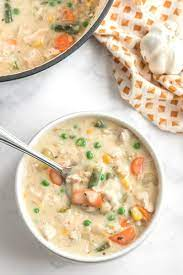

Chicken and Rice Soup

Description
This is the perfect warm, creamy, and filling chicken and rice soup!
Ingredients
- 4 Chicken thighs
- 3 Carrots
- 3 Celery stalks
- 1 Box chicken broth
- 1/2 Chopped onion
- 1T Italian seasoning
- 1T Pepper
- 1T Salt
- 1 (5oz) Can evaporated milk
- 1 package Uncle Bens wild rice
Steps
- Heat the oil in a large pot. Add the onion, carrot, and celery. Stir and cook for 4 to 5 minutes, until slightly tender. Stir in the garlic and cook 1 minute longer. Stir in the broth, seasoning, and pepper. Bring to a boil, reduce heat to low.
- Add chicken thighs into the pot. Cover and allow to cook for 30 minutes.
- Add rice into the pot, cover, and allow to cook for the required time on the box.
- Add can of evaporated milk and half a can of peas if wanted. Serve!